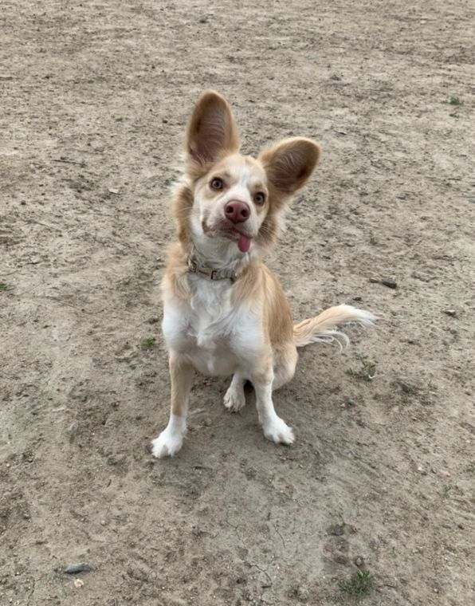
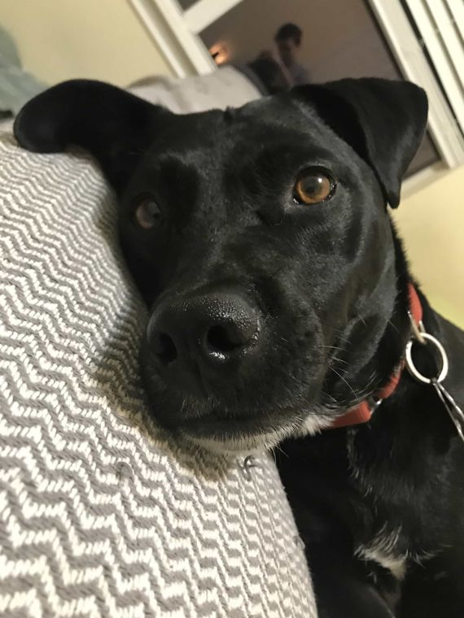
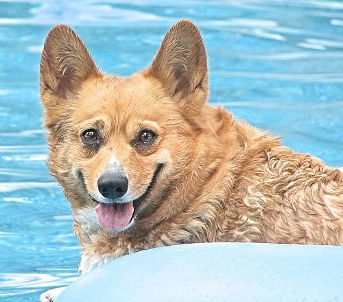
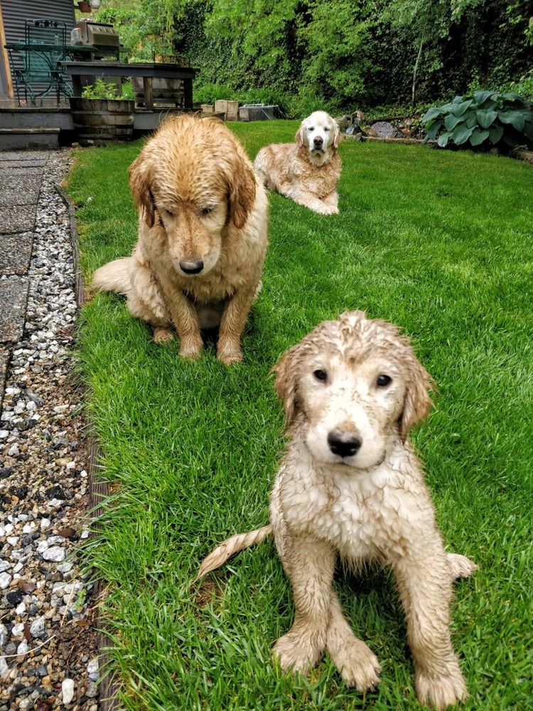
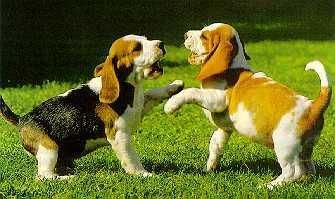
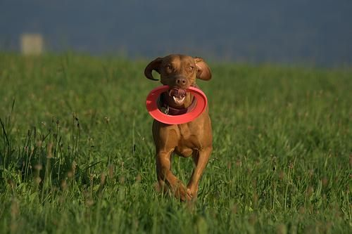
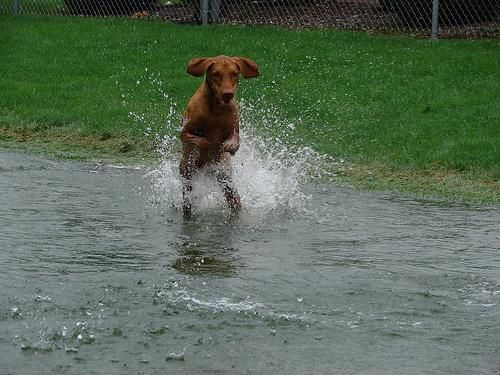

Você salva duas vidas
Cada adoção abre uma vaga no abrigo para resgatarmos outro cão que está na rua.
Adoção responsável · Sorocaba e região
Resgatamos, cuidamos e encontramos famílias para cães que perderam o lar. Todos são vacinados, vermifugados e esperam por alguém como você.






Por que adotar?
Cada adoção abre uma vaga no abrigo para resgatarmos outro cão que está na rua.
Todos passam por veterinário, recebem vacinas e vermífugo, e os adultos já vão castrados.
Adotar em vez de comprar diminui a procura por criadouros que exploram as mães.
Esperando há mais tempo
Quem adotou
O Bidu chegou com medo de tudo. Hoje ele dorme no pé da cama e recebe meus filhos na porta da escola.
Eu queria um filhote, mas me apaixonei por um idoso. Foi a melhor decisão que tomei. Ele é o cão mais grato do mundo.
O processo foi simples e muito cuidadoso. A equipe tirou todas as dúvidas pelo WhatsApp e ainda acompanhou a adaptação.
Nossos cães
Use os filtros para ver por porte, idade ou sexo. Clique no cão para conhecer a história dele.
Nenhum cão com essa combinação de filtros no momento.
Divulgue um cão
Preencha os dados e a mensagem chega organizada no WhatsApp da nossa equipe. Depois é só enviar as fotos na mesma conversa.
Todo anúncio passa por análise antes de ser publicado. Assim evitamos anúncios falsos e venda de animais disfarçada de adoção. Seu telefone nunca aparece no site.
Toque no botão abaixo para abrir o WhatsApp com a mensagem já escrita. Nossa equipe vai analisar o anúncio antes de publicar.
Adoção responsável
Adotar é um compromisso para a vida toda do animal. Este guia ajuda você a decidir com tranquilidade e a receber o novo amigo do jeito certo.
Veja os perfis e pense no porte e na energia que combinam com sua casa e sua rotina.
Clique em "Quero adotar" e converse com a gente pelo WhatsApp.
Conhecemos você, sua casa e marcamos um encontro com o cão.
Você assina o termo de adoção responsável e leva seu amigo pra casa.
| Gasto | Porte pequeno | Porte médio | Porte grande |
|---|---|---|---|
| Ração de boa qualidade | R$ 80 a 150 | R$ 150 a 250 | R$ 250 a 400 |
| Antipulgas e vermífugo | R$ 40 a 70 | R$ 50 a 90 | R$ 70 a 120 |
| Vacinas anuais (valor por mês) | R$ 15 a 25 | R$ 15 a 25 | R$ 15 a 25 |
| Higiene e banho | R$ 60 a 120 | R$ 80 a 150 | R$ 100 a 180 |
Valores aproximados de referência para o interior de São Paulo. Reserve também uma quantia para consultas e emergências veterinárias.
Sobre o projeto
O Patas de Casa nasceu em 2020, quando um grupo de amigos começou a resgatar cães abandonados nas ruas de Sorocaba. Hoje somos voluntários, lares temporários e clínicas parceiras trabalhando juntos para que nenhum cão fique sem família.
Nossa missão é simples: resgatar, cuidar e encontrar um lar responsável para cada cão, com acompanhamento depois da adoção.

Como ajudar
Receba um cão em casa por algumas semanas enquanto ele espera a adoção. Nós cuidamos da ração e do veterinário.
Ajude nas feiras de adoção, nos passeios do abrigo, nas fotos dos cães ou nas redes sociais.
Ração, cobertores, remédios e qualquer valor ajudam a manter os resgates e as castrações.
Contato
Todas as conversas sobre adoção, divulgação e ajuda passam pelo nosso WhatsApp.
(14) 99689-5439
Atendimento de segunda a sábado, das 9h às 18h.